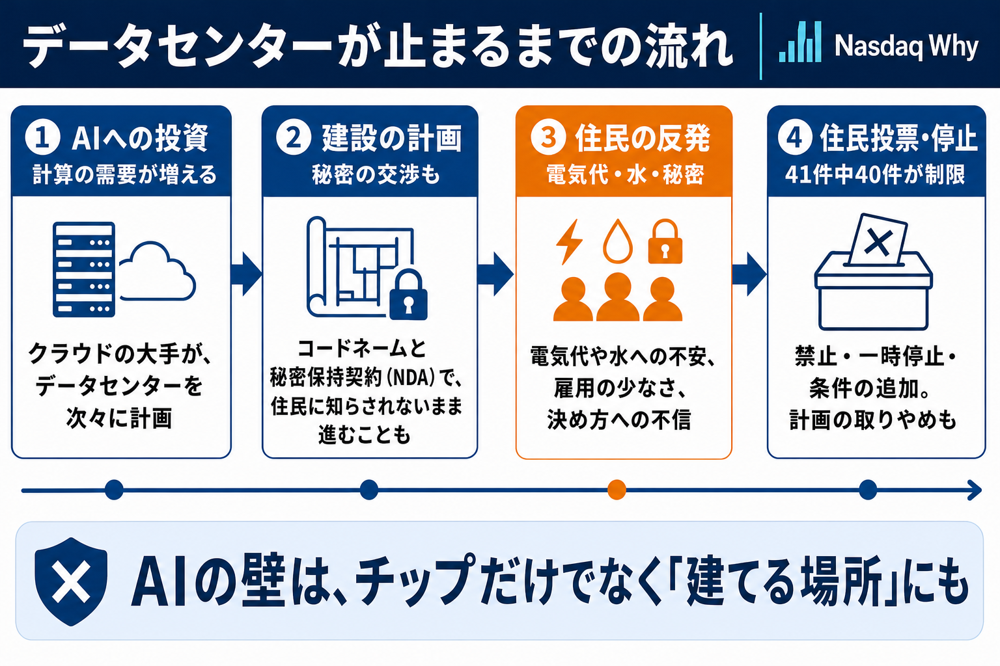

ニュースの深掘り
AIのデータセンター、なぜ住民投票で次々と止められた？――41件中40件が「制限」に
11月3日の米国の選挙で、データセンター（AIの計算をする巨大な施設）についての住民投票が41件ありました。そのうち40件で、住民は建設を制限する側を選びました。AIへの投資はまだ増えていますが、建てる場所で反対が広がっています。住民はなぜ反対するのか、そして投資にどう関わるのかを見ていきます。

11月3日の住民投票で何が起きたか
米国の選挙調査サイト Ballotpedia によると、11月3日の投票では、10の州でデータセンターに関する住民投票が41件ありました。そのうち40件で、建設を制限する、または開発を進める案を否決する結果になりました。
いちばん多かったのはオハイオ州で、21件と全体の半分以上です。少なくとも14の町が禁止や制限を決めました。グランビルの町では禁止案が82.45%の賛成で通り、アッシュビルでは2つのデータセンターの計画が81.61%の反対で否決されました（どちらも非公式の集計）。
2026年を通して見ると、データセンターに関する地域の住民投票は少なくとも57件（13の州）あります。11月14日時点で結果が出た53件のうち52件（98%）が、開発を制限する側の結果でした（Ballotpedia）。
反対は投票の前から広がっていた
2026年1〜7月だけで、全米の自治体が決めたデータセンターの一時停止や禁止は294件にのぼりました。40の州で、どこかの自治体が禁止か一時停止をしています。州全体で一時停止しているのはニューヨーク州だけです。
2026年には、地域の反対のなかで50以上の計画が取りやめになったと報じられています。米国で動いているデータセンターは3,173か所で、ほかに1,140か所が計画されています（2026年4〜6月、451 Research）。
なぜ住民は反対するのか
- 電気代：大量の電気を使うため、地域の電気代が上がるのではという不安。ペンシルベニア州では、知事が「データセンターは自分の電気代を自分で負担する」よう求める命令を出しました。
- 水：冷やすために大量の水を使うことへの不安。
- 雇用が少ない：ルイジアナ州のある計画では、建設中は1,000人以上の仕事が生まれる一方、ずっと続く仕事は200人ほどと見込まれています。
- 秘密の交渉：自治体と開発会社が秘密保持契約（NDA）を結び、「プロジェクト・ライトニング」のようなコードネームで計画を進めることがあります。研究者の調べでは、31件のうち少なくとも25件でNDAが使われていました。
秘密保持契約（NDA）を禁止する動きも
ミシガン、オクラホマ、ケンタッキー、オハイオの各州では、データセンターのNDAを禁止する法案が出されました。ペンシルベニア州の知事は、自分の管轄する機関がデータセンターの計画でNDAを使うことを禁じました。
一方で、ルイジアナ州のある100億ドルの計画は、NDAを使わず、計画の情報をすべて公開して進められました。住民への説明の仕方が、計画が進むかどうかを分けはじめています。
テキサス州では、知事選の争点に
データセンターが急増しているテキサス州でも、反発が出ています。S&P Global によると、州の世論調査では57%が自分の地域にデータセンターができることに反対しました。
11月の知事選では、選挙戦でデータセンターの「本格的な一時停止」を訴えたジーナ・ヒノホサ氏が、現職のアボット知事を破りました（MIT Technology Review）。テキサス州は米国でいちばん伸びているデータセンターの市場で、大きな計画が多くあります。新しい知事のもとで計画がどうなるかが注目されています。
投資にとっての意味
これまで、AIの成長の壁は「チップ（GPU）が足りない」ことだといわれてきました。いまは、建てる場所・電力・住民の合意も壁になりつつあります。米下院のスブラマニャム議員は、今のやり方では、計画が出るたびに反対が起き、事実上の全国的な一時停止になりかねないと警告しています。
法律事務所の専門家は、住民との話し合いは、以前は「してもよいこと」だったが、今では場所を選ぶ最初の段階に組み込まれていると話しています。データセンターの建設が遅れれば、AI向けの半導体や電力の需要が見込みより後ろにずれる可能性もあります。どこまで影響するかは、まだ分かりません。
AIの推論のコストが下がっているのに、なぜ設備への支出は増えるのか。次回は「推論」とブロードコムの話を予定しています。
出典
- Baxtel：41件中40件で住民がデータセンターの制限を支持（Ballotpedia の集計）
- S&P Global：データセンターへの反発が中間選挙の住民投票に
- NPR：秘密保持契約（NDA）がデータセンターの計画を隠している
- Fortune：オハイオ州のデータセンターの住民投票
- Ballotpedia：2026年のデータセンター関連の住民投票
- MIT Technology Review：テキサス州のデータセンターの建設ブームと知事選